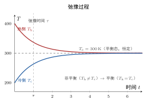

平衡态
一句话定义
平衡态是热力学系统在不受外界影响时，宏观性质不随时间改变、状态参量取定值的那种状态。
定性
先让这个状态在眼前”看见”。
想象一壶刚倒进杯子的水：水面还在晃动，水温上热下凉，各处的软硬、颜色都不均匀，你拿温度计一处一处量，读数一直在跳。把它盖上盖子放一会儿，不看它了；等再回头，水面平了，去哪量温度都是一个数，压强也是一个数。这个”安静下来、处处一个样、量什么都不再变”的状态，就是平衡态。
请注意，它不是真的静止。你若能放一个显微镜看进去，会看到里面的分子仍然在横冲直撞、一刻不停。真正”静”的，是那些你宏观上能用仪表量出来的量——温度、压强、体积——它们不再随时间波动。这是理解平衡态最关键的一口：宏观的”静”底下压着微观的”动”，而正是微观的动，托起了宏观的静。
它在知识体系里的位置：热力学和气体动理论的一切公式都要先站在平衡态上才能落地。物态方程 里的 、、 这三个数，只有系统先稳定到平衡态，才谈得上确定值；否则你量出来的只是某个瞬时值，代进去就错。所以平衡态不是”一个概念”这么轻，它是整个热学理论的出发平台。
这里有一个反直觉的点，值得停下来想：平衡态是最”乱”的微观状态，却是最”静”的宏观状态。微观上分子分布达到最无规、最混乱，宏观上反而呈现出最确定、最简洁的少数几个数。这份”乱到极致反而确定”，恰好就是后面所有统计规律的脾气。

图：气体从高低温不均的非平衡态出发，经弛豫过程，各宏观量逐步收敛到恒定值，对应图右的平台即平衡态。
数学表达
平衡态用”宏观量不随时间变”来判定。设系统由压强 、体积 、温度 三个状态参量描述，则平衡态满足：
这里 是时间，三个偏导都为零表示这三个宏观量对时间不变化。符号上要分清：、、 是宏观量、是少数几个能直接测量的数；而字母下面的分子运动，是另一套「微观量」的海洋，公式里根本不出现它们。
这个式子想说的结构是：平衡态不是要求每个分子怎样，而是要求仪表读数稳定。它把”系统所处的一个状态”这件事，收敛成”少数几个数能不能同时取定值”。如果说非平衡态是”这三个数各自还在挣扎、仍在变化”，那么平衡态就是”它们已各自安顿、确定了”。
一个补充：这三个参量并非彼此无关。对给定的一定量气体，它们由物态方程联系在一起——知道两个，第三个就定了。所以”平衡态”对外呈现的，本质上就是一组唯一的、确定的状态参量；反过来，一旦这组数确定了，这个平衡态就被唯一描述了。
关键性质
-
宏观不变而微观不停。 平衡态下你用仪表量，读数不变；但分子照旧狂乱运动。为什么？因为平衡是热动平衡——动力学意义上的、统计意义上的平衡，不是死寂。宏观量的恒定，来自大量分子运动的统计平均在时间上稳定，而不来自分子停下来。
-
状态参量唯一确定、处处相同。 平衡态下系统内部各处温度、压强、密度一致（否则会自发传热、膨胀，也就是还没平衡）。为什么？因为只要存在局部的温度差或压强差，系统就会自发朝消除差价的方向演化——传热、扩散——直到处处均匀为止。所以”均匀”本身就是平衡态的特征。
-
孤立系统的演化方向是自发的、单向的。 一个不受外界影响的气体，会自发走向平衡态，但不会自发离开它、回到当初不均匀的模样。为什么？因为平衡态对应的是微观上概率最大的那种分布：让大量分子恰好聚成一团冷热不均的样子的微观方式数，远远少于让它们打散成处处均匀的微观方式数。所以系统”自动滑向”最大概率，这是统计意义上的必然。
-
到达它需要时间——弛豫时间。 从非平衡到平衡不是瞬时的，要经历一段气体内部重新分布、能量传递的过程。为什么？因为温度、密度、速度的重新均匀，靠的是分子间的碰撞和迁移，这需要时间。这个过程叫弛豫，其特征时间就是弛豫时间 。系统越快达到平衡，τ 越小。
一句话收拢：平衡态=宏观读数稳定 + 系统处处均匀 + 演化方向不可逆 + 到达需要弛豫时间。这四条是同一件事的四个侧面。
推导
现在把平衡态”为什么必然出现”真正推出来——不是记住”它会出现”，而是看清它不得不出现。
先抛一个问题：微观上，杯子里的分子在永不停歇地乱跑，任何一个分子下一时刻在哪都说不准；那凭什么宏观上看，温度、压强会”处处一个样、还不随时间变”？这个”从乱到确定”的转变，到底是怎么发生的？
设物理场景。取一杯密闭的气体，设分子总数为 ，是个天文数字（一摩尔就有 个）。把容器想像成切成很多个大小相同的小区域。给每个分子一个无规的速度和位置，让它们自由碰撞、乱跑。系统不与外界交换能量和质量，是孤立的。
列依据。这里用到三条事实，都不是人为假设，是气体动理论的出发点：一是分子数极其庞大；二是分子运动无规、没有哪个方向或哪个位置特别受青睐——这就是后面会讲的等几率假定；三是宏观量由微观量的统计平均给出。
逐步演绎。现在盯住其中一个很小的小区域，数一数里面有多少个分子。因为每个分子在乱跑，某一瞬间这个数会随机地高一点或低一点；但关键在”数量巨大”：当你在 个分子中随机取一个小区，它含分子的概率是固定的，于是小区内的分子数会在某个平均值附近波动。波动的大小用相对涨落衡量，大约是 。 有 的量级，所以 小到 上下——涨落被压到几乎可以忽略。于是你测到的”密度”，实际上就是那个稳定的平均值，而不是某个时刻的毛刺。
压强更是如此。压强来自分子撞壁：每秒钟撞到单位面积器壁的分子数、乘以每次碰撞传递的动量。单看某一个分子，它撞不撞、什么时候撞完全是随机的；但放到 个分子上，单位时间撞壁的总次数稳得像时钟。随机个体被海量抽到一起，其总和就冻结在平均值附近——这就是”大量”带来的统计确定性。
回头看。结论呼之欲出：平衡态不是某个分子”听指挥、乖乖站好”的结果，恰恰相反，是太多分子失控地乱到互相抵消，把一切随机毛刺抹平，留下的只剩那个稳定的平均。它之所以必然出现，是因为微观无序的方式数远远压倒有序——系统被”概率”这个不可抗拒的力量推向处处均匀、读数稳定。所以说平衡态是统计的必然，而不是谁的意志。这也解释了为什么它不可逆：自发回到那种极低概率的不均匀状态，几乎不可能发生。
为什么重要
平衡态是气体动理论全部公式的地基，没有它就没有”确定的状态”。物态方程 、理想气体压强公式 、温度公式，全都默认系统先处在平衡态、、、 才有确定值。
它的地位和后果体现在工程动机上：真实过程（抽气、压缩、加热、膨胀）绝大多数是非平衡的，中间状态各处不均匀、读数乱跳。工程上要把这些过程算得动，就引入准静态近似——把过程放得足够慢，让每一步都近似看成平衡态，于是每走一步都能用平衡态公式。你可以这样理解：平衡态是热学这台机器的”标定零点”，所有过程都以”靠近它”为前提。没有它，我们连”现在系统是什么状态”都说不清，更谈不上用任何公式预测。
适用条件
平衡态的成立有三个前提，缺一不可：
- 系统不受外界影响（孤立或封闭）。 若外界持续加热、抽气、施压，宏观量被外力拖着变，就不是平衡态。这是”没有外界影响”的直接含义。
- 已充分弛豫（时间足够长）。 即便系统孤立，也从非平衡出发，需要一段弛豫时间让内部均匀。未弛豫时测到的 、 是瞬时值，不是平衡值。
- 气体宏观上足够均匀。 内部无温度差、压强差、密度差的系统，才能被少数状态参量统一描述；存在显著梯度的，属非平衡，须用更复杂的输运理论。
边界要说清：平衡态是理想化的抽象，真实系统永远是”在逼近它”。工程上能接受的，是”准静态”——即过程慢到每一瞬间都近似平衡。真实边界：高速压缩、急剧爆燃、强湍流这类过程，气体远未均匀，不能用平衡态公式；此时要用流体力学或非平衡热力学，而不能套 。
边界与误区
最容易错的，是把平衡态和”静止""死寂”划等号。我们来挖根因。
-
误区一：平衡态=分子不动。 根因：宏观上读数不变，眼睛和仪表都”看不见动静”，就想当然以为里面也停了。正确区别：平衡态是统计层面的稳定，分子一刻不停，只是乱到互相抵消、平均不变。它叫”热动平衡”，“动”字就点明了这个本质。
-
误区二：稳态=平衡态。 根因：两个字都含”不变”，外观几乎一样。正确区别：稳态可以靠外界持续补偿维持——比如电水壶持续加热，水温恒定在沸点，但它内部一直在进去热量、流失热量，有净能量流动；而平衡态没有外界影响、内部没有净流动。一个是被外力”撑着”的不变，一个是”自己安顿”的不变，本质不同。
-
误区三：平衡态就没有任何变化。 根因：只盯宏观。正确区别：微观上平衡态内部时刻有无穷多的涨落——某瞬间某小区分子数偏多、某处多撞了几次壁——只是这些毛刺被海量分子平均掉了。宏观的”不变”是大量涨落的统计平均结果，不是真的毫无起伏。
对照
最容易和平衡态混的是稳态。两者都是”宏观上不变”，但只用一个关键差异就能分清楚：
平衡态是被动到的静，稳态是被撑住的静。
平衡态要求没有外界影响、系统内部没有净的能量或质量流动；稳态则恰恰相反，它必须有外界持续注入能量（或质量）来抵消系统内部的流失，好让外在读数维持不变。判断一句话：这个”不变”，是关掉一切外因后自己保持的，还是必须不停供着才能保持的？前者是平衡态，后者是稳态。这个差异在热学里是硬的——平衡态才能用状态参量和物态方程，稳态不行。
例子
我们算一次、量一次，把它落到手上。
设一密闭容器中有一定量气体，初始时左半被测温度 ，右半 ——这是明显的非平衡态，各处不均匀。放一旁，任其独自演化（孤立）。
给它 弛豫时间，比如 后，气体内部靠碰撞和迁移把能量摊平：热的一侧把能量传给冷的一侧，温度逐渐靠近。若容器与外界绝热（能量不散失），最终两侧都收敛到平均温度 。此时再去左、右各测一次，会发现读数都停在 ，不再变；压强 也处处一致。这就是平衡态——温度、压强两个宏观量同时取定值、处处相同、不随时间变。
反推工程含义：如果你在气体还没到平衡、比如只过了 时就去测，会得到左侧 、右侧 这种中间值。此时你若拿这个”瞬时读数”代进物态方程 ，算出来的结果会跟真实达到平衡后的状态对不上——误差直接来自”测早了”。这就是为什么工程上测气体状态参数总要先”等稳定”：压缩气缸后，必须等气体内部温度、压强均匀了再读数；快速冲压时气体来不及均匀，测量就不可靠。平衡态不是玄学，它是”读数能不能信”的前提。